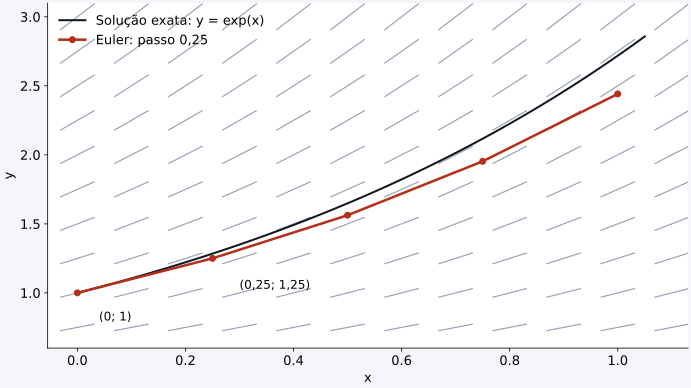
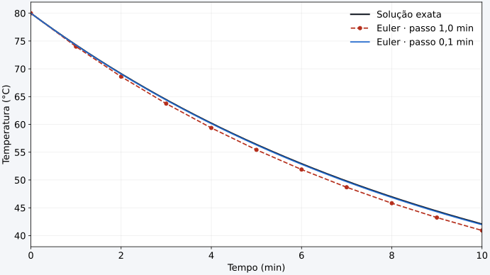

Para começar
Seguir a inclinação, mesmo sem conhecer a curva
A abertura segue a intuição apresentada por Apastron em Why does Euler's Method Work?: a EDO informa a inclinação em cada ponto, mesmo quando ainda não conhecemos a curva que resolve o problema.
0:38 — intuição e campo de direções · 3:53 — da intuição à fórmula · 5:26 — exemplo do foguete. O vídeo acima abre nesse último trecho, em que uma tabela organiza os passos do cálculo.
Comecemos, como no vídeo, com \(dy/dx=y\) e \(y(0)=1\). Em cada ponto, desenhamos um pequeno segmento cuja inclinação é \(y\): esse conjunto é um campo de direções. Partindo de \((0,1)\), a inclinação vale 1. Avançar \(\Delta x=0{,}25\) nessa direção dá \(y=1+1\times0{,}25=1{,}25\). Recalculamos a inclinação no novo ponto: agora ela vale 1,25.

Uma curva suave se parece com uma reta quando olhamos um trecho pequeno. Euler transforma essa aproximação local em um caminho de pequenos passos. A seguir, a variável independente será o tempo \(t\), e o estado será uma grandeza física.
Parte 1
A lei física diz como o estado muda
Uma equação diferencial ordinária (EDO) relaciona uma grandeza às suas derivadas em relação a uma única variável independente. Aqui essa variável será o tempo. Podemos escrever uma EDO de primeira ordem como:
\(y\) é a grandeza que queremos acompanhar; \(f(t,y)\) é sua taxa de variação. A condição inicial \(y_0\) informa onde começar, no instante \(t_0\). Uma taxa em °C/min descreve a mudança da temperatura; uma taxa em m/s² descreve a mudança da velocidade.
Resolver a EDO numericamente significa construir uma sequência de valores aproximados: \(y_0,y_1,y_2,\ldots\), nos instantes \(t_0,t_1,t_2,\ldots\). Não precisamos encontrar antes uma fórmula exata para \(y(t)\): precisamos saber calcular a taxa no estado atual.
Parte 2
Da derivada à regra de Euler
Em um intervalo pequeno \(\Delta t\), aproximamos a derivada pela variação da grandeza dividida pela variação do tempo:
Isolando o próximo valor, obtemos o método de Euler explícito:
Os índices \(n\) e \(n+1\) indicam o passo atual e o próximo. A aproximação está em usar a taxa do início do intervalo durante todo aquele passo. No gráfico, seguimos um pequeno trecho de reta com essa inclinação; no próximo ponto, calculamos outra inclinação.
- Escolha a EDO \(f(t,y)\), o instante inicial e o valor inicial.
- Escolha o passo \(\Delta t\) e o tempo final.
- Calcule a taxa \(f(t_n,y_n)\) usando o estado atual.
- Multiplique a taxa por \(\Delta t\) e some ao valor atual.
- Avance o tempo, guarde o resultado e repita a partir do passo 3.
Parte 3
Exemplo físico: um corpo esfriando
Considere um corpo inicialmente a 80 °C em um ambiente a 20 °C. Vamos usar a lei de resfriamento de Newton, supondo temperatura uniforme no corpo, temperatura ambiente constante e coeficiente de resfriamento constante:
Quanto maior a diferença para o ambiente, maior o módulo da taxa. O sinal negativo faz a temperatura cair quando \(T>T_{\mathrm{amb}}\). Adotaremos valores didáticos: \(k=0{,}1\;\mathrm{min}^{-1}\), \(T_{\mathrm{amb}}=20\;°\mathrm{C}\) e \(T(0)=80\;°\mathrm{C}\). O tempo será medido em minutos e usaremos \(\Delta t=1\;\mathrm{min}\).
Passo 1 — de 0 para 1 minuto
No início, \(T_0=80\;°\mathrm{C}\). Primeiro a taxa, depois a variação e o novo valor:
Passo 2 — de 1 para 2 minutos
Agora usamos 74 °C para recalcular a taxa:
Passo 3 — de 2 para 3 minutos
A queda de temperatura fica menor a cada passo: o corpo se aproxima do ambiente. Subtrair sempre 6 °C usaria a taxa inicial para sempre, deixando de representar esta EDO.
| Passo \(n\) | Tempo (min) | \(T_n\) (°C) | Taxa (°C/min) |
|---|---|---|---|
| 0 | 0 | 80,000 | −6,000 |
| 1 | 1 | 74,000 | −5,400 |
| 2 | 2 | 68,600 | −4,860 |
| 3 | 3 | 63,740 | −4,374 |
| 4 | 4 | 59,366 | −3,937 |
| 5 | 5 | 55,429 | −3,543 |
Parte 4
O algoritmo em Python, sem solucionador pronto
O programa abaixo faz exatamente as contas anteriores. Basta ter
Python instalado; este exemplo não importa biblioteca alguma.
Para manter o laço simples, escolhemos um tempo final que é múltiplo
de dt: 10 min divididos em dez passos de 1 min.
temperatura_ambiente = 20.0 # °C
temperatura = 80.0 # °C, no instante inicial
k = 0.1 # 1/min
dt = 1.0 # min
tempo_final = 10.0 # min
numero_passos = round(tempo_final / dt)
print("t (min) | T (°C)")
print(f"{0.0:7.2f} | {temperatura:7.3f}")
for passo in range(numero_passos):
taxa = -k * (temperatura - temperatura_ambiente)
temperatura = temperatura + taxa * dt
tempo = (passo + 1) * dt
print(f"{tempo:7.2f} | {temperatura:7.3f}")Salve o arquivo e execute no terminal, na pasta em que ele está:
python euler_resfriamento.py
taxa usa a temperatura atual. A linha seguinte implementa
Euler: Python calcula o lado direito antes de guardar o novo valor
em temperatura. O for repete a atualização,
e print mostra a evolução temporal. O resultado final é
40,921 °C em 10 min.
O formato .3f só arredonda a apresentação na tela;
não arredondamos a temperatura dentro do cálculo. No código,
números decimais usam ponto, como 0.1.
Parte 5
O tamanho do passo muda a resposta
A taxa real muda dentro de cada intervalo; Euler só a atualiza no começo do próximo. Para este problema, passos menores acompanham melhor a curva. Podemos conferir porque esta EDO também possui uma solução exata:
Em 10 min, ela fornece aproximadamente 42,073 °C. Não usamos essa fórmula para executar Euler; ela serve aqui como referência para medir o erro.
| Passo (min) | Atualizações | Euler (°C) | Erro absoluto (°C) |
|---|---|---|---|
| 1,0 | 10 | 40,921 | 1,152 |
| 0,5 | 20 | 41,509 | 0,564 |
| 0,1 | 100 | 41,962 | 0,111 |

Euler é um método de primeira ordem: para uma solução suficientemente suave e passos pequenos e estáveis, reduzir o passo pela metade costuma reduzir aproximadamente pela metade o erro acumulado no mesmo intervalo de tempo. Isso exige o dobro de atualizações.
Experimente: execute o mesmo script com
dt = 0.5 e depois dt = 0.1 e confira a tabela.
A concordância com a solução exata verifica o cálculo para esta EDO;
verificar se a lei de resfriamento descreve um corpo real exige medidas.
Parte 6
A mesma ideia para a velocidade de uma queda
Agora o estado é a velocidade \(v\). Escolhendo o sentido positivo para baixo e um modelo de resistência do ar proporcional à velocidade, a segunda lei de Newton dá:
Com \(m=1\;\mathrm{kg}\), \(b=0{,}2\;\mathrm{kg/s}\), \(g=9{,}81\;\mathrm{m/s^2}\), \(v_0=0\) e \(\Delta t=0{,}1\;\mathrm{s}\), os dois primeiros passos são:
g = 9.81 # m/s²
massa = 1.0 # kg
b = 0.2 # kg/s, resistência linear do ar
velocidade = 0.0 # m/s, sentido positivo para baixo
dt = 0.1 # s
tempo_final = 10.0 # s
numero_passos = round(tempo_final / dt)
print("t (s) | v (m/s)")
print(f"{0.0:5.1f} | {velocidade:8.4f}")
for passo in range(numero_passos):
aceleracao = g - (b / massa) * velocidade
velocidade = velocidade + aceleracao * dt
tempo = (passo + 1) * dt
print(f"{tempo:5.1f} | {velocidade:8.4f}")
Execute com python euler_queda.py. O corpo acelera, mas a
resistência aumenta com a velocidade. No modelo, a velocidade tende a
\(v_{\mathrm{terminal}}=mg/b=49{,}05\;\mathrm{m/s}\), quando a aceleração
tende a zero. O exemplo acompanha uma queda idealizada sem calcular o
instante de chegada ao solo; a resistência linear é uma hipótese,
não uma descrição de toda queda no ar.
Se quisermos também a posição \(x\), acrescentamos \(dx/dt=v\). No Euler explícito, calculamos \(x_{n+1}=x_n+v_n\Delta t\) e \(v_{n+1}=v_n+a_n\Delta t\) usando os valores do mesmo instante antigo. Isso transforma uma EDO de segunda ordem para a posição em duas EDOs de primeira ordem.
Parte 7
Outros métodos: olhar mais de uma inclinação
Euler usa uma única avaliação da taxa por passo. A família Runge–Kutta combina taxas calculadas em estados intermediários estimados para acompanhar melhor a curvatura da solução. A lei física e a condição inicial continuam as mesmas; muda a regra de avanço.
- RK2, como o ponto médio: estima o estado na metade do intervalo e usa a taxa nesse ponto para avançar o passo inteiro.
- RK4 clássico: combina quatro avaliações da taxa por passo. É de quarta ordem e costuma ser mais preciso que Euler para o mesmo passo em problemas suaves.
- Passo adaptativo: métodos como RK45 estimam o erro e ajustam o intervalo durante a integração.
Para entender o algoritmo, Euler deixa cada conta visível. Para resolver problemas na prática, uma biblioteca permite usar métodos com controle de erro sem reescrever o solucionador.
Parte 8
O mesmo resfriamento com SciPy e Runge–Kutta
Agora passamos a EDO e o estado inicial à função
solve_ivp do SciPy.
A opção method="RK45" usa Runge–Kutta de ordem 5(4),
com passo adaptativo. RK45 é diferente do RK4 clássico de passo fixo.
Instale as bibliotecas neste ambiente Python:
python -m pip install scipy matplotlibBaixar runge_kutta_resfriamento.py
from collections.abc import Sequence
import matplotlib.pyplot as plt
from scipy.integrate import solve_ivp
def resfriamento(t: float, estado: Sequence[float]) -> list[float]:
temperatura = estado[0]
return [-0.1 * (temperatura - 20.0)]
tempos = [float(t) for t in range(11)]
solucao = solve_ivp(
resfriamento,
(0.0, 10.0),
[80.0],
method="RK45",
t_eval=tempos,
rtol=1e-8,
atol=1e-10,
)
if not solucao.success:
raise RuntimeError(solucao.message)
for tempo, temperatura in zip(solucao.t, solucao.y[0]):
print(f"{tempo:5.1f} min | {temperatura:7.3f} °C")
plt.plot(solucao.t, solucao.y[0], "o-", label="Runge–Kutta (RK45)")
plt.xlabel("Tempo (min)")
plt.ylabel("Temperatura (°C)")
plt.grid(True)
plt.legend()
plt.show()Execute com python runge_kutta_resfriamento.py.
resfriamentoretorna a derivada, não a temperatura futura. O argumentotfaz parte da interface, mesmo quando a taxa depende apenas do estado.(0.0, 10.0)define o intervalo;[80.0]contém a condição inicial.t_evalindica os instantes de saída. Não fixa os passos internos do método.rtoleatolcontrolam as tolerâncias de erro local.solucao.y[0]contém as temperaturas calculadas.
Com esses parâmetros, a última linha mostra aproximadamente 42,073 °C em 10 min, próxima da solução exata. Compare com os 40,921 °C obtidos por Euler com passo de 1 min. Nos dois casos, fornecemos a mesma física: a biblioteca automatiza o avanço numérico.
Para investigar: troque a temperatura inicial por 10 °C nos dois programas de resfriamento. O que muda no sinal da taxa? Por que o mesmo modelo agora descreve um aquecimento?